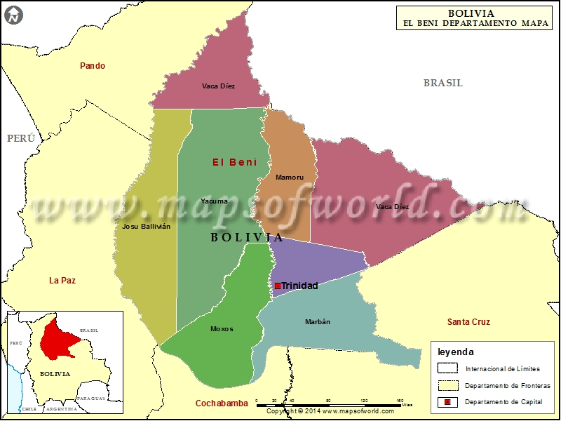

ARTICLE

Cochabamba es una ciudad del centro de Bolivia. En un cerro en el este, un teleférico asciende a la enorme estatua del Cristo de la Concordia con vista al área circundante. En el centro de la ciudad está la Plaza 14 de Septiembre, una plaza colonial rodeada de galerías y la catedral barroca andina de San Sebastián. En los alrededores, hay muchas iglesias coloniales, como la de Santo Domingo con su impresionante fachada de piedra tallada